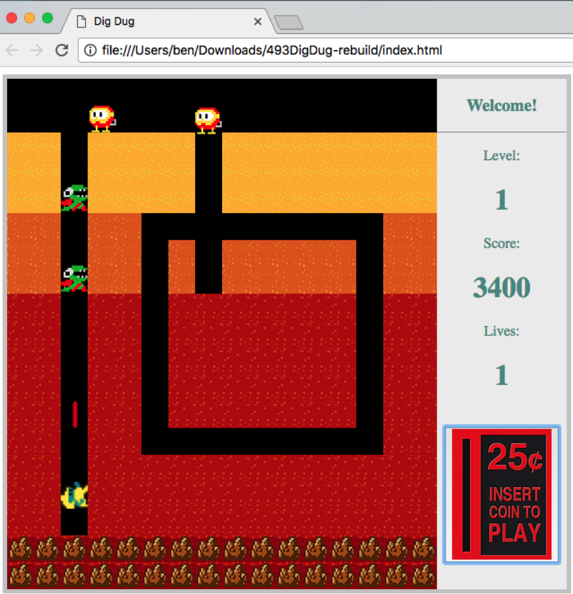

EECS 493 Fall 2017
Created by: Benjamin Erichsen, Jacob Myers, and Anjana Rajagopal
We developed a web game called Dig Dug. Based on the famous Japanese arcade game, it has some fun twists, like shooting enemies with lasers! The game entails moving a blue man, whom we call a smurf, around the board to dodge enemies. The smurf (who you control) begins on ground level, and can enter the existing tunnel system or dig new tunnels. If one of the enemies touches the smurf, you lose one of your 3 lives. If you kill all 4 enemies you progress to the next level with 4 more enemies. The goal of the game is to accumulate a lot of points. The way to do this is by digging new tunnels and killing enemies.
Good luck!
Here are some graphics from users enjoying our game:
